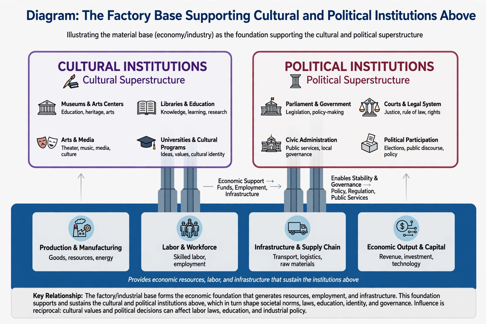

In Marxist theory, base and superstructure are central concepts describing the relationship between a society's economic organisation and its other institutions. The base (or infrastructure) consists of the forces and relations of production; the superstructure consists of the legal, political, religious, artistic and philosophical forms — and the ideologies — that arise from and reflect it.

Karl Marx set out the model in the preface to A Contribution to the Critique of Political Economy (1859): people enter into relations of production corresponding to a stage of development of material productive forces; the totality of these relations forms the economic structure of society, "the real foundation, on which arises a legal and political superstructure." Changes in the base, he argued, eventually transform the superstructure.
Crude readings treat culture and politics as mere reflections mechanically determined by the economy. Friedrich Engels, in later letters, stressed that the superstructure reacts back upon the base and that the economic is decisive only "in the last instance." Later Marxists developed subtler accounts: Antonio Gramsci's theory of hegemony, Louis Althusser's ideological state apparatuses, and Raymond Williams's insistence that base and superstructure are processes rather than fixed layers. Critics from outside Marxism argue the model is vague or unfalsifiable, while analytical Marxists have tried to give it a functional-explanation form.